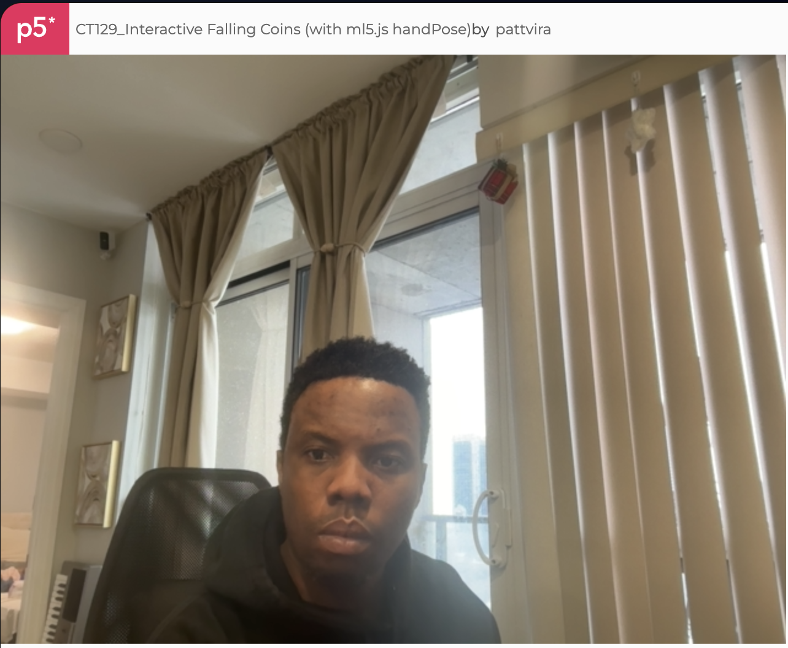
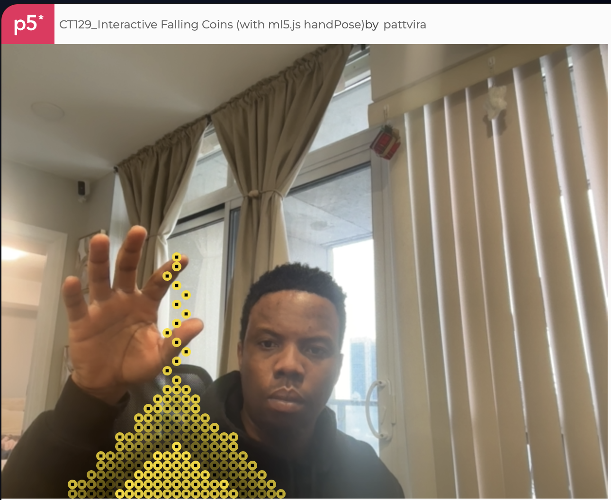
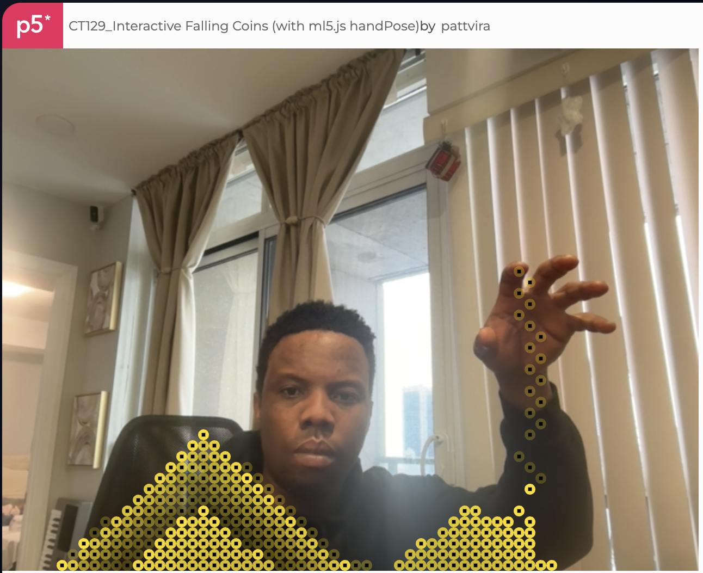
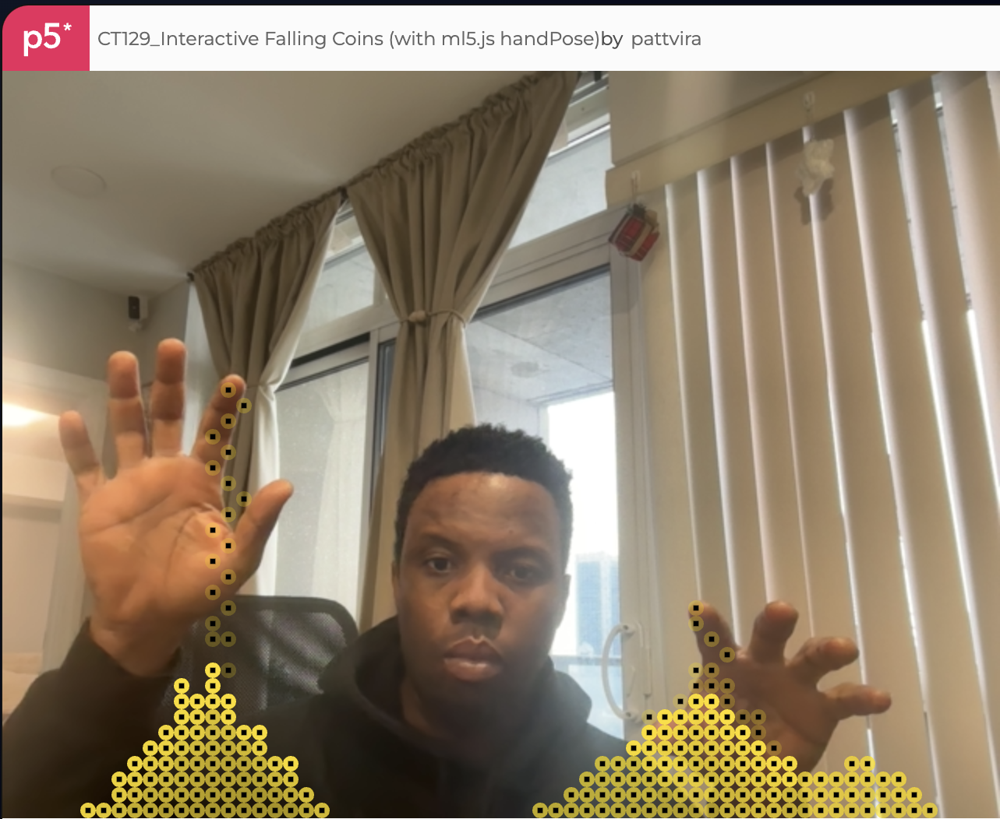

Project Abstract
Interactive Falling Coins is a browser-based interactive system that uses real-time hand tracking to translate simple finger gestures into a gravity-driven visual simulation. Built with p5.js and ml5.js HandPose, the project explores embodied interaction as an intuitive alternative to traditional input devices.
Live Prototype
This embedded sketch runs in real time using webcam-based hand tracking. Allow camera access when prompted. Move your index finger in front of the camera to generate falling coins.
Project Overview
The project investigates how minimal hand gestures can act as direct, expressive inputs for digital systems. By mapping fingertip position to particle generation, the system allows users to shape a dynamic visual environment using only bodily movement.
Iteration Process
The prototype was developed through a series of iterative stages, balancing technical reliability with interaction clarity.




Role in Life
This prototype demonstrates how touchless, gesture-based interaction can support creative systems, public installations, and accessible interfaces. By removing traditional input devices, the project emphasizes the body as a meaningful control surface.
Reflection
By limiting the interaction to a single gesture and a simple visual system, the project prioritizes clarity, responsiveness, and stability. The work illustrates how constraint-driven design can lead to expressive and engaging embodied interactions.